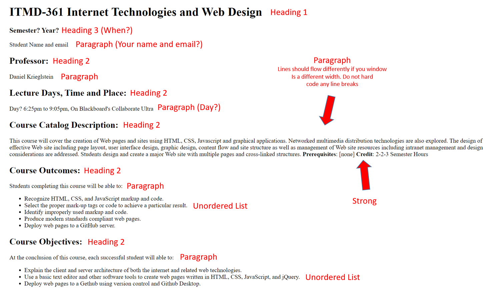

At the conclusion of this course, each successful student will able to:
- Explain the client and server architecture of both the internet and related web technologies.
- Use a basic text editor and other software tools to create web pages written in HTML, CSS, JavaScript, and jQuery.
- Deploy web pages to a Gethub using version control and Github Desktop.
subsection 2
